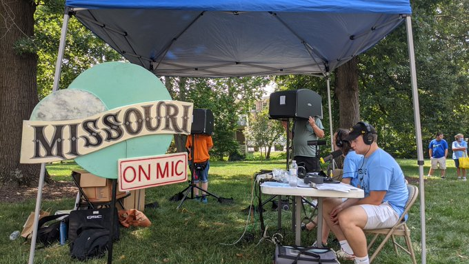

Portfolio: The Work of Connor McGovern
KBIA - "Missouri on Mic"
Missouri On Mic is a KBIA oral history and journalism project collecting stories from Missouri in its 200th year.
Missouri on Mic Episode: Jake Edgar
"It's so beautiful, and I wish that the rest of the country could start acknowledging it for that, rather than its negative political policies."
KCOU - "Connor's Musical Rollercoaster"
Connor's Musical Rollercoaster (available on Spotify)
Come along for the ride with DJ Conductor Connor as we combine journalistic skills with a passion for music to discuss a variety of topics and themes within this sonic artform.
VOX Magazine - "VOX Voice"
A podcast for VOX Magazine where we talk to influential people in Columbia, Missouri about their lives, careers and the future.
VOX Voice Episode: Brian Yearwood
Brian Yearwood is taking to Columbia and inspiring its next generation of scholars